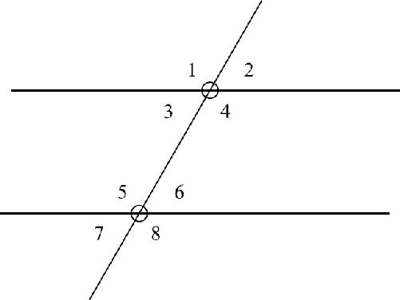
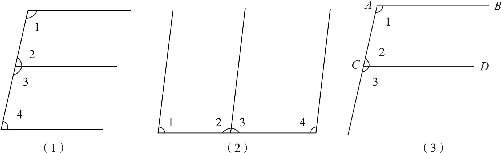
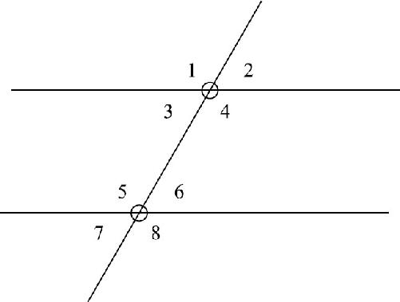

有一个让数学家们头疼了2000多年的一个问题：平行！
我们小学时就学过画平行线，为什么平行还会让人头疼呢？因为平行是所有定义中最难说清的．《几何原本》上的定义是：在同一平面上，永不相交的两条直线就叫作平行直线．这句话听起来还是可以理解的，因为直线是无限长的，如果这两条直线不平行，只要它们不断地延长下去，间距肯定会不断地收紧变窄，最后一定会相交．所以我们说，同一平面内，不相交的线是平行线．然而，难点是我怎么知道两条直线是平行的呢？难道真的要把两条直线无限地延长吗？如果这两条直线只是非常接近于平行，我们就得延长到宇宙的另一头才能看到它们相交，那不累死了呀！因此，我们只能通过别的办法判定．什么办法？
欧几里得给出的办法是：让这两条直线和第三条直线相交．如果相交以后，在同一侧内的两个角加起来等于180度，这两条直线就平行．这就是《几何原本》的最后一条公设——第五公设的等价命题．到现在，我们已经把欧几里得的五条公设全部说清楚了：第一，两点之间只能画一条直线，简称两点定线；第二，直线无限长；第三，给定半径和圆心可以画个圆；第四，所有的直角都相等；第五，两直线被第三条直线所截，如果相交在同一侧的两个内角相加等于平角，这两条直线就是相互平行的． (2) 和前几条公设相比，第五条的描述太复杂了，所以这也是最让人头疼的一条公设．
第五公设之所以让人头疼，就是因为它不太直观，于是很多数学家就想办法把它从公设里头剔除掉，如果能够通过其他的公理把它给证明了，把它降级为一个定理就更好了．可惜的是，2000多年过去了，没有任何人取得成功．不但没人成功，反而有人证明了第五公设不可能通过别的公理证明！而且还有人陆续发现了不遵循第五公设的新的几何学，关于第五公设有意思的故事有很多，即使讲一天也讲不完，所以我们就不展开讨论了．目前我们学的还是欧氏几何，所以我们只能先把它当作一个公设给记住了．接下来，我们就研究一下两条平行线被第三条直线所截的情况．我们知道，两条直线相交可以产生四个角，那么如果两条平行直线被第三条直线所截就会有两个交点，产生八个角，如图4－4所示．我们的故事就从这三条线和八个角的关系开始了．

图4－4
两条相互平行的水平直线被一条斜线所截后，产生了从∠1到∠8的八个角，图中∠4和∠6的关系就是第五公设所说的，在截线同一侧的两个内角，因为它们都在截线的右侧，而且在平行线的内侧，所以它们两者之间的关系叫作同旁内角．当然，在它们对面的∠3和∠5也是一对同旁内角，因为它们同在截线的左侧，并且也在平行线的内侧．根据第五公设，我们可以推导出：如果两直线平行，同旁内角相加就等于180度．
同旁内角相加等于180度就能证明两直线平行，简称同旁内角互补，两直线平行．这就是平行线的判定定理．同理，既然这种方法能够判定平行了，那么是不是说两条直线平行，它产生的同旁内角就一定互补呢？没错！两条直线平行，同旁内角互补，这也是一条定理，叫平行线的性质定理．性质定理和判定定理有什么区别？性质定理是在已经知道这两条直线平行的条件下，可以由此得出哪些角的关系；而判定定理是说，在不知道这两条直线平行的情况下，应该通过什么条件才能判断两条直线平行．那么，是不是只要把判定定理反过来就可以得到性质定理呢，是的！比如，四个角是直角就可以判断一个四边形是长方形．那反过来长方形肯定是四个角相等的．但是，性质定理反过来能得到判定定理吗？这就不一定了，因为图形的性质不止一个，比如正方形的性质既有四条边相等，也包含四个角相等．我们不能根据其中的一个条件就判定某个图形一定是正方形！好了，接下来我们继续讨论平行的问题．在一个相对复杂的图形上，如何快速找出同旁内角呢？我们可以借助图4－5中的字母或者汉字的帮助学习一下．

图4－5
在大写的英文字母“E”中，由于有上下两组平行线存在，因此我们至少可以找到三组同旁内角：“E”字图中的∠1和∠2，∠3和∠4，以及∠1和∠4，都是同旁内角的关系；同样，在汉字“山”字形的内部，也有着同样的三组同旁内角．由于我们心中对这些常用字母和汉字有着非常深刻的印象，因此，在面对一个复杂图形的时候，可以利用这些符号快速捕捉到图形的特征．
说完了字母“E”和汉字“山”，我们再说说字母“F”．在一个大写的“F”中，同样存在水平的两条平行线被一条斜线截断的情况．在“F”中，两条水平线中间的∠1和∠2，仍然是同旁内角的关系，两者之和仍然是180度，但是，在“F”中下面的∠3和上面的∠1又有什么关系呢？显然，∠3和∠2是邻补角的关系，因此，∠3和∠2相加也是180度．记得在我们证明对顶角的时候也发生过类似的情况：两个角加上同一个角都等于180度，这就可以证明这两个角相等了，过程如下：
∵AB∥CD （已知），
∴∠1＋∠2＝180°（两直线平行，同旁内角互补），
∴∠1＝180°－∠2（上式两侧同时减去∠2）．
又∵∠3＝180°－∠2（邻补角的定义），
∴∠1＝∠3（等量减等量，差相等）．
像“F”形上下的这两个角（∠1和∠3），因为它们都在两条直线下方的右侧位置上，所以我们把它们叫作同位角．两条直线平行，同位角相等，这就是平行线的第二个性质定理．同样，由同位角相等，我们照样可以推出同旁内角互补，所以根据同位角相等，我们也可以判定两直线平行，这就是平行线的第二个判定定理．那么，除了字母“F”，还有其他方式能够发现同位角吗？如果把不等号放大一下（见图4－6）我们就会发现：在不等号上，有不止一对同位角，两条水平线的左上的∠1和∠5、左下的∠3和∠7、右上的∠2和∠6、右下的∠4和∠8都是同位角，这四对同位角都是彼此对应相等的．

图4－6
此外，在这幅“三线八角”的图上还有一个角，和同位角对着的，就是同位角的对顶角，比如在右上角的方位上：∠6的同位角是∠2，∠2的对顶角是∠3，∠3和∠6共用一条边，其他两条边相互平行，结果拼成了一个“Z”字形，那么它们之间是什么关系呢？显然，因为∠3和∠2是对顶角，它俩是相等的，又因为∠2和∠6相等，所以∠3和∠6也应该是相等的．因为这两个角存在于两条平行线内部，同时又交错分布在截线的两侧，所以就叫内错角．没错，字母“Z”的上下两个角就是一对内错角，同样，字母“N”的左右两个角也是内错角关系，除了∠3和∠6之外，∠4和∠5也是一对内错角．内错角相等同样既是平行线的性质定理，又是它的判定定理．
同位角相等、内错角相等、同旁内角互补，这三个性质就是平行线的基本性质，同时，这三者之间具有等价的关系，三者中的任何一个，都可以判定两条直线之间的平行关系．而这些定理全部都是源于欧几里得第五公设．